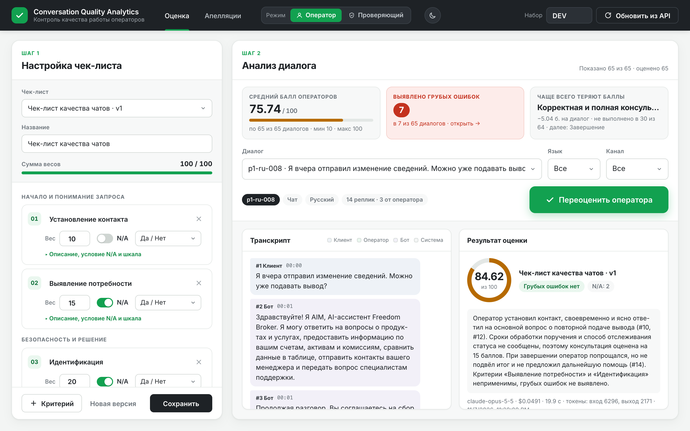
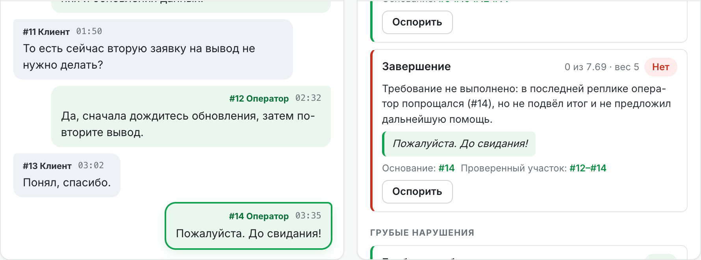
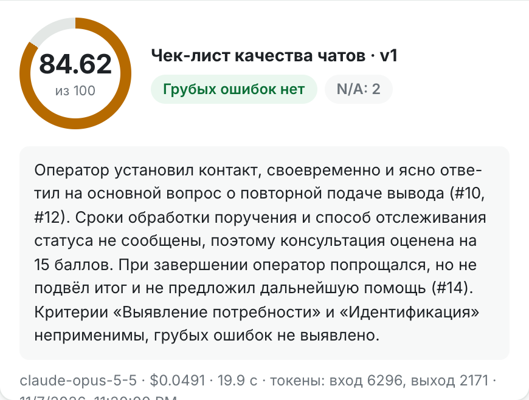
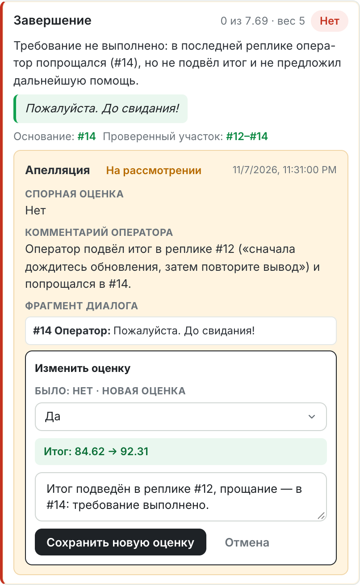
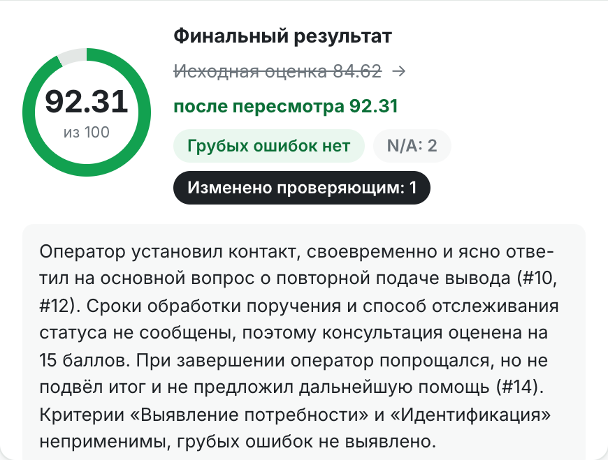
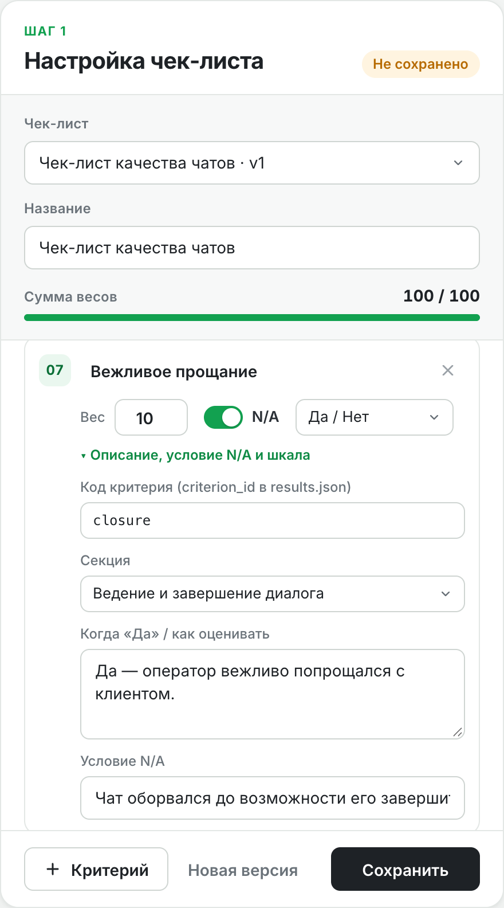
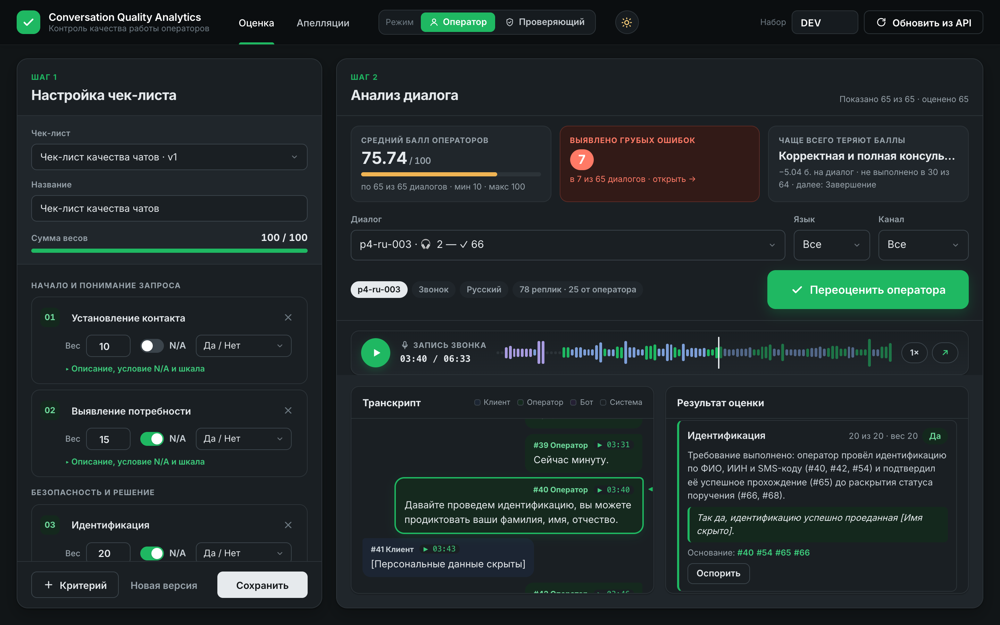
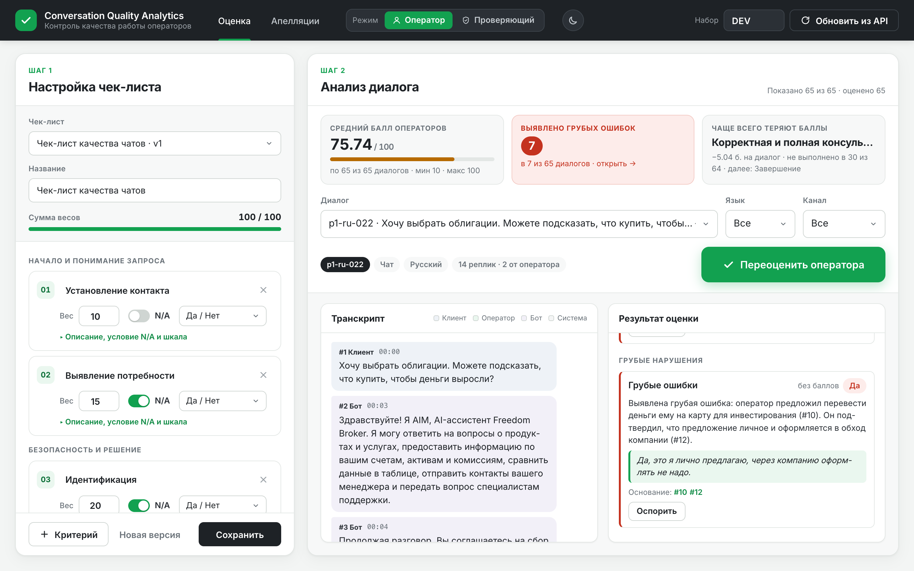

Итог 84.62 при двух N/A: веса «Выявления потребности» и «Идентификации» распределены между применимыми критериями.
contact ✓ · discovery N/A · identification N/A
consultation 15 · empathy ✓ · dialogue 7 · closure ✓
применимый вес 65 → баллы 10 + 15 + 15 + 10.5 + 5 = 55.5
Тест стабильности: 9 диалогов RU / KZ / EN, 19 проверок расчёта на каждом — включая стресс «всё N/A». Бэкенд и фронтенд дают одинаковый итог.



Правило «Завершения» → «вежливо попрощался», веса 06/07 → 10/10.

// запись JSON 1.0 · p1-kz-001 { "conversation_id": "p1-kz-001", "status": "ok", "criteria": [ { "criterion_id": "contact", "value": true, "rationale": "Требование выполнено: поздоровался на казахском (#10).", "evidence_turns": [10] }, { "criterion_id": "identification", "value": null, … }, … ], "score": { "final_score": 93.75, "critical_flag": false } }
Сбой модели → status: "error", пустой criteria, score: null и причина — как требует приложение.
| Набор | Диалогов | Статус | Стоимость | За диалог |
|---|---|---|---|---|
| DEV · 60 чатов + 5 звонков | 65 | 65 ok | $3.51 | $0.054 |
| PROD · FBroker | 10 | 10 ok | $0.52 | $0.052 |
| Всего | 75 | $4.03 | $0.054 |
results/dev/results.json и results/prod/results.json — JSON 1.0: ID совпадают с API, каждая запись проверена валидатором, итоги совпадают с пересчётом.
Один вызов модели; системный промпт с чек-листом кэшируется. Звонок ~80 реплик — $0.08–0.12.
грубых ошибок найдено (7 в DEV, 1 в PROD) — каждая подтверждается текстом реплики

# 1. зависимости и настройки cd backend && npm install cp .env.example .env # ключ API и ссылка организаторов # 2. набор и сервер npm run fetch && npm start # → http://localhost:3000 # 3. результаты для сдачи npm run results:dev node generate_results.js --prod --group=FBroker
github.com/MedgatAuken/DataChallengeFreedom
README: архитектура, запуск, формат, стоимость, ограничения